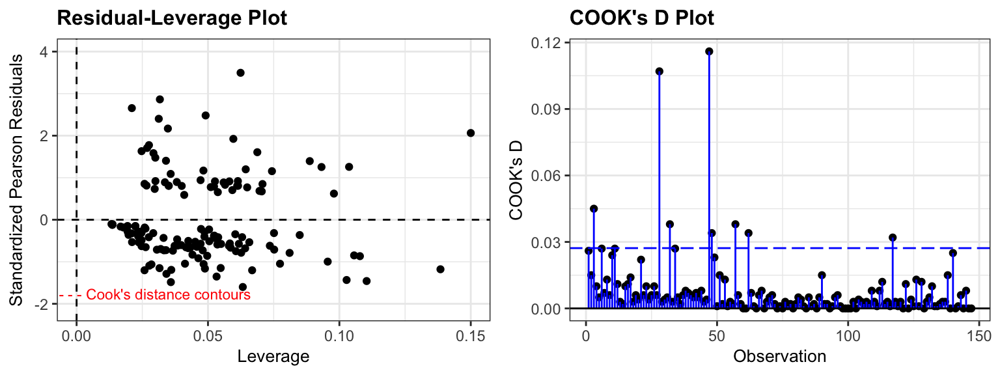

# A tibble: 7 × 5
term estimate std.error statistic p.value
<chr> <dbl> <dbl> <dbl> <dbl>
1 (Intercept) -1.27 1.83 -0.696 0.486
2 FMMale -0.561 0.531 -1.06 0.291
3 SSLow -0.105 0.469 -0.225 0.822
4 AG -0.0398 0.0355 -1.12 0.263
5 YR 0.0729 0.0265 2.75 0.00594
6 CD 0.0260 0.0255 1.02 0.308
7 BKBird 1.36 0.411 3.31 0.000923Homework 09
Due: Monday of Week 10 at start of class
There is a homework template available if you’d like to use that as a starter file, and copy and paste the code as needed.
Problem 1: Binary logistic regression review (no R needed)
A case-control study in The Hague, Netherlands, compared 49 people with lung cancer to 98 people without lung cancer who were similar in age. The researchers wanted to know whether keeping pet birds is associated with lung cancer, after accounting for smoking and other factors.
The variables are lung cancer (lung_cancer, 1 = yes), sex (FM), socioeconomic status (SS, high or low), whether the person kept birds (BK), age (AG, in years), years of smoking (YR), and cigarettes per day (CD).
Write out the theoretical regression model
Interpret the coefficient for
BKBirdon the odds scale, in context.Calculate a 95% confidence interval for the odds ratio for keeping birds, and interpret it in context.
Interpret the coefficient for
YRon the odds scale, for 10 additional years of smoking.Calculate the predicted log-odds, odds, and probability of lung cancer for a 60-year-old man of high socioeconomic status who has smoked 20 cigarettes a day for 30 years and keeps birds. Why shouldn’t we interpret your answer as the chance that a man like this in the population has lung cancer?
Below are the leverage and Cook’s distance plots, and the people with the largest leverage and the largest Cook’s distance.
Calculate the cutoff \(2(p+1)/n\) for high leverage. Which people have high leverage, and why? (Use the first table output)
The person with the largest Cook’s distance has lung cancer but never smoked. Why is their standardized residual large? (Use the second table output)
Is anyone influential? Would you remove anyone from the data? Explain.

# A tibble: 3 × 10
lung_cancer FM SS BK AG YR CD .hat .std.resid .cooksd
<dbl> <fct> <fct> <fct> <int> <int> <int> <dbl> <dbl> <dbl>
1 1 Male High Bird 64 13 30 0.150 1.90 0.107
2 0 Male High NoBird 65 47 45 0.138 -1.35 0.0319
3 0 Male Low Bird 47 28 40 0.110 -1.55 0.0377# A tibble: 3 × 10
lung_cancer FM SS BK AG YR CD .hat .std.resid .cooksd
<dbl> <fct> <fct> <fct> <int> <int> <int> <dbl> <dbl> <dbl>
1 1 Female Low Bird 61 0 0 0.0624 2.32 0.116
2 1 Male High Bird 64 13 30 0.150 1.90 0.107
3 1 Male High NoBird 43 19 15 0.0491 2.01 0.0454Problem 2: Trout
An experiment at the Marine/Freshwater Biomedical Sciences Center at Oregon State University investigated the carcinogenic effects of aflatoxicol, a metabolite of Aflatoxin B1, which is a toxic by-product produced by a mold that infects cottonseed meal, peanuts, and grains. Twenty tanks of rainbow trout embryos were exposed to one of five doses of Aflatoxicol for one hour. The data below represent the numbers of fish in each tank and the numbers of these that had liver tumors after one year.
Each row in the dataset represents a separate tank of rainbow trout embryos.
trout <- Sleuth3::ex2116Make a plot of the empirical log-odds of cancer vs dose (one point per tank), and another of the empirical log-odds vs \(1/\sqrt{\text{dose}}\). Which predictor looks more appropriate for a linear model on the log-odds scale?
Fit the binomial logistic model for the odds of cancer using \(\frac{1}{\sqrt{\text{dose}}}\) as the sole predictor. (Note: to do this, the predictor in the
glmcommand should be written asI(1/sqrt(Dose)). Report the fitted model, then plot the Pearson residuals vs \(\frac{1}{\sqrt{\text{dose}}}\) with a smoother. Is there evidence of nonlinearity between the log odds and the predictor variable?Give the dose at which your model estimates a 50% chance of getting a tumor. (Hint: what log-odds does this correspond to?)
Calculate the Pearson \(X^2\) statistic and use it to calculate \(X^2 / \text{df}\) and the p-value for the goodness-of-fit test. Does the binomial model fit these data adequately?
Refit the model from part 2 using the quasibinomial procedure. Give the dispersion parameter estimate (how does it compare to your \(X^2 / \text{df}\) from part 4?). Compare the standard errors from the quasibinomial model to the standard binomial model.
Problem 3: Salamanders (by hand, 5 parts)
Researchers counted the number of Del Norte salamanders found in a 7-hectare area at each of 47 randomly chosen sites in northern California. At each site, they also recorded the percent of the ground covered by the forest canopy (
PctCover) and the age of the forest in years (ForestAge).
salamanders <- Sleuth3::case2202
sal_glm <- glm(Salamanders ~ PctCover + ForestAge, data = salamanders, family = "poisson")
summary(sal_glm)
Call:
glm(formula = Salamanders ~ PctCover + ForestAge, family = "poisson",
data = salamanders)
Coefficients:
Estimate Std. Error z value Pr(>|z|)
(Intercept) -1.483e+00 4.573e-01 -3.244 0.00118 **
PctCover 3.249e-02 5.735e-03 5.666 1.46e-08 ***
ForestAge -2.111e-05 4.981e-04 -0.042 0.96620
---
Signif. codes: 0 '***' 0.001 '**' 0.01 '*' 0.05 '.' 0.1 ' ' 1
(Dispersion parameter for poisson family taken to be 1)
Null deviance: 190.22 on 46 degrees of freedom
Residual deviance: 121.30 on 44 degrees of freedom
AIC: 212.36
Number of Fisher Scoring iterations: 5sal_reduced <- glm(Salamanders ~ PctCover, data = salamanders, family = "poisson")
deviance(sal_reduced)[1] 121.305Using proper notation, write down the Poisson regression model that was fit. Define all variables.
Interpret the coefficient for
PctCoverin context, for a 10-percentage-point increase in canopy cover.Calculate a 95% confidence interval for the coefficient of
PctCover. Interpret it for a 10-percentage-point increase in canopy cover.Calculate the predicted mean number of salamanders at a site with 80% canopy cover in a 100-year-old forest.
Use a likelihood ratio test to test whether
ForestAgeis needed in the model, after accounting forPctCover. State the hypotheses, the test statistic and degrees of freedom, and your conclusion. Does the \(z\)-test forForestAgeagree?
Problem 4: Salamanders and overdispersion (by hand, 5 parts)
Continue with sal_glm from Problem 4. Below are the first three sites with their fitted means (\(\widehat\lambda_i\)) and Pearson residuals, along with some other output.
salamanders |>
mutate(fitted_mean = fitted(sal_glm),
pearson_resid = residuals(sal_glm, type = "pearson")) |>
head(3) Site Salamanders PctCover ForestAge fitted_mean pearson_resid
1 1 13 85 316 3.566917 4.994674
2 2 11 86 88 3.702492 3.792517
3 3 11 90 548 4.175633 3.339652sum(residuals(sal_glm, type = "pearson")^2)[1] 122.8492df.residual(sal_glm)[1] 44qt(0.975, df = 44)[1] 2.015368qf(0.95, df1 = 1, df2 = 44)[1] 4.061706Calculate the estimated dispersion parameter \(\widehat\psi\). What does it tell you about these data? Why might the counts be more variable than a Poisson model allows?
Calculate the quasipoisson standard errors for
PctCoverandForestAge, and the quasipoisson \(t\)-statistic for each.Recalculate the 95% confidence interval for the
PctCovercoefficient using the quasipoisson model. How does it compare to the interval from Problem 4?Calculate the drop-in-deviance \(F\)-statistic for testing whether
ForestAgeis needed in the quasipoisson model, and give your conclusion.Check your answers to 3–5 by fitting the model with
family = "quasipoisson"in R. Which conclusions from Problem 4 changed, and which did not?
Problem 5: Binary, binomial, or Poisson?
For each scenario, say whether you would use binary logistic regression, binomial logistic regression, Poisson regression, or none of these. For binomial scenarios, say what \(n_i\) is. For Poisson scenarios, say what is being counted.
Each row is a male elephant, and the response is the number of offspring he had over an 8-year period.
Each row is an island in Finland, and the response is the number of bird species that went extinct on the island over 10 years, out of the species that were living there at the start.
Each row is a US state, and the response is the percent of adults who smoke. (The number of adults surveyed in each state is not given.)
Each row is a day, and the response is the number of rides in a bike share system (the
bikesdata from class). We used linear regression for these data earlier in the term. What would be one advantage of Poisson regression, and what is the advantage of using linear regression?
Problem 6: Reflections
Start by reviewing either HW2 or Case Study 1. (Look at your submission on gradescope) What was something you found difficult initially, but now seems “easy”?
Write 2-3 sentences describing how you have grown this term. (Some ideas to get you started: overcoming a technical hurdle; managing group work; incorporating R and math; study skills; time management; etc.)
Write 2-3 sentences describing the “main point” of this class.